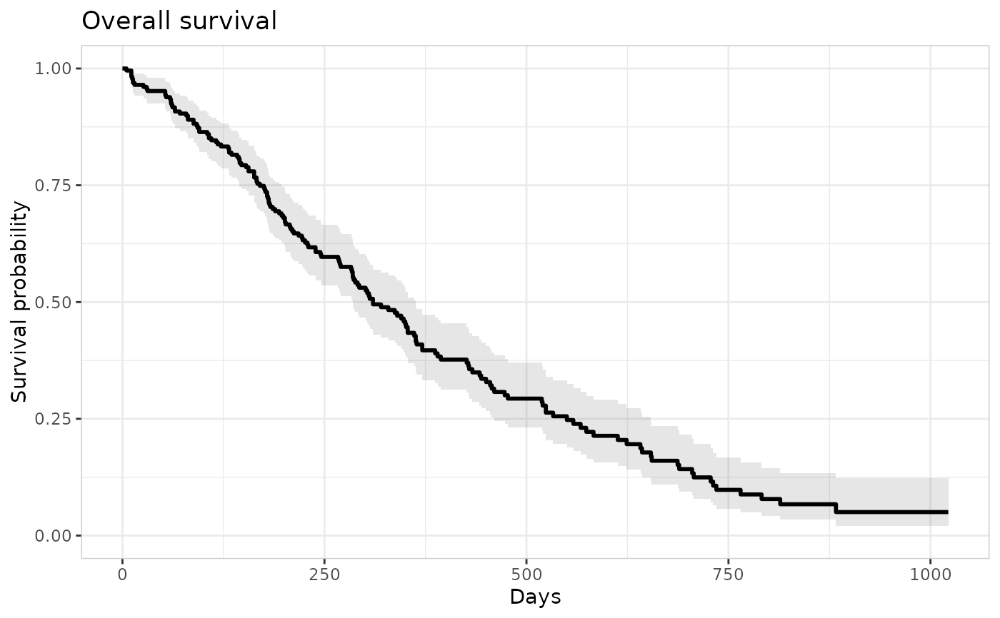

Set axis/legend labels, plot titles/captions, axis limits, theme
objects, formatters, the legend key glyph, and relative panel heights
for a time-to-event plot. This does not change which variable is
mapped to which aesthetic – that's the builder's job via style
(see er_style_tte_curve).
Usage
er_tte_theme(
object,
xlab = NULL,
ylab = NULL,
strata_lab = NULL,
title = NULL,
subtitle = NULL,
caption = NULL,
xlim = NULL,
ylim = NULL,
theme_base = NULL,
theme_extra = NULL,
format_p = NULL,
format_percent = NULL,
format_number = NULL,
draw_key = NULL,
height_curve = NULL,
height_risktable = NULL
)Arguments
- object
Partially constructed plot (has S3 class
er_tte).- xlab
Time axis label (single string). See "Details" for why
xlim(not this) drives layout decisions;xlabis purely cosmetic.- ylab
Survival-probability axis label (single string).
- strata_lab
Stratification legend label (single string). Errors if
stratify_bywasn't set iner_tte()– there's no stratification legend to label.- title, subtitle, caption
Plot-level annotation text (single strings).
- xlim
Time-axis limits (length-2, increasing numeric vector, no
NA) – overwritesobject$time$limits. See "Details" for the call-order caveat.- ylim
Survival-probability axis limits (length-2, increasing numeric vector, no
NA). Purely cosmetic; defaults toc(0, 1).- theme_base
A ggplot2 theme object (e.g.
ggplot2::theme_minimal()) – the swappable overall visual theme, defaulting toggplot2::theme_bw().- theme_extra
A ggplot2 theme object (e.g. from
ggplot2::theme()) with additional theme tweaks layered on top oftheme_base. See "Details" for its default and replacement semantics.- format_p
Formatter function (typically from
scales::label_pvalue()), used byer_tte_add_summary()'s log-rank annotation.- format_percent
Formatter function (typically from
scales::label_percent()), used byer_style_tte_risktable_text()'sshow_percentargument to format a risk-table count as a percentage of its stratum's baseline size.- format_number
Formatter function (typically from
scales::label_number()), used byer_tte_add_summary()'ser_style_tte_summary_coefficients()/er_style_tte_summary_gof()builders to format coefficient/goodness-of-fit values.- draw_key
A key-glyph function (e.g.
ggplot2::draw_key_point()), passed as the curve/model layers'key_glyphargument.- height_curve, height_risktable
Relative panel heights (single positive numbers), used when
er_tte_add_risktable()'s panel is stacked below the curve panel. Supplying only one leaves the other unchanged.
Details
Every argument defaults to NULL, meaning "leave whatever was set
before unchanged". This allows repeated calls to er_tte_theme() to
update only the supplied fields, like ggplot2::theme(). There is no
implicit way to reset a field to the er_tte() default.
xlim overwrites object$time$limits directly (the same structural
field er_tte() itself sets from the data), rather than a purely
cosmetic ggplot2::coord_cartesian() zoom – mirroring
er_plot_theme()'s own xlim (not er_vpc_theme()'s, which is
display-only). This matters because object$time$limits also drives
non-cosmetic defaults computed at add-layer time: er_tte_add_model()'s
default time_grid and er_tte_add_risktable()'s default times
both span it. Call er_tte_theme(xlim = ...) before those layers
when you want the narrower/wider range reflected in their defaults;
calling it after only changes the curve panel's own x-axis display.
ylim, by contrast, is purely cosmetic (survival probability is
always modelled on [0, 1]; this only changes what's displayed),
stored on object$theme$ylim and defaulting to c(0, 1).
theme_extra defaults to a panel border plus legend.position = "bottom". Supplying a new value fully replaces this default rather
than merging with it, so re-include the border/legend-position
settings too if you want to keep them alongside your own additions.
title/subtitle/caption are applied via a single
ggplot2::labs() call on the curve panel – unlike er_plot_theme()'s
patchwork::plot_annotation() indirection, this is enough even when
er_tte_add_risktable()'s panel is stacked below it via
patchwork::wrap_plots(), since the curve panel is always the
top-most one.
Examples
library(survival)
lung |>
er_tte(time, status == 2) |>
er_tte_add_curve() |>
er_tte_theme(
xlab = "Days", ylab = "Survival probability",
title = "Overall survival"
) |>
plot()
